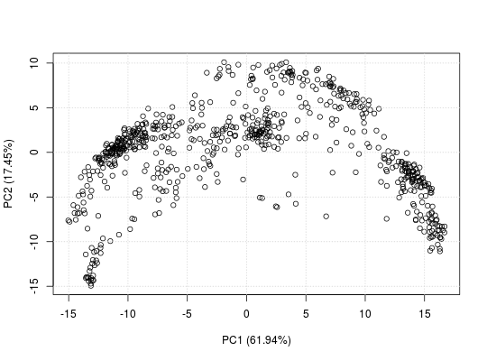
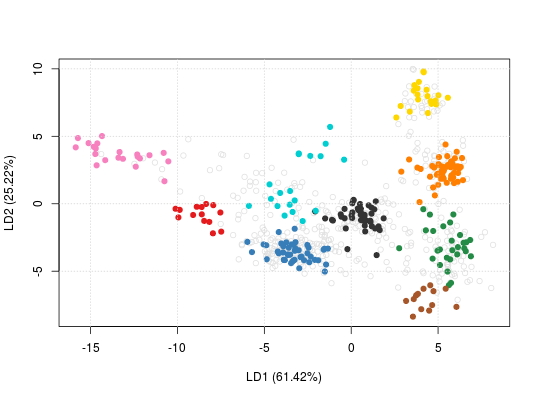
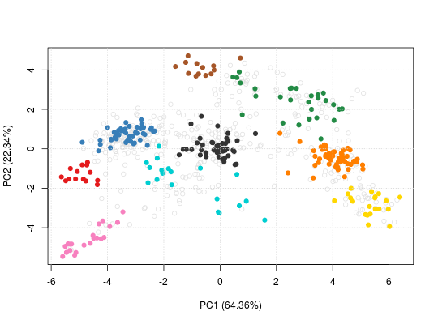
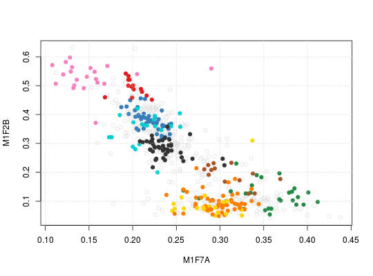

Plot organelle assignment data and results.
Generate 2 or 3 dimensional feature distribution plots to
illustrate localistation clusters. Rows/features containing
NA values are removed prior to dimention
reduction. plot3D relies on the rgl package, that
will be loaded automatically.
plot2D(object, fcol = "markers", fpch, unknown = "unknown", dims = 1:2, score = 1, method = "PCA", methargs, axsSwitch = FALSE, mirrorX = FALSE, mirrorY = FALSE, col, pch, cex, index = FALSE, idx.cex = 0.75, addLegend, identify = FALSE, plot = TRUE, ...) # S4 method for MSnSet plot3D(object, fcol = "markers", dims = c(1, 2, 3), radius1 = 0.1, radius2 = radius1 * 2, plot = TRUE, ...)
Arguments
- object
- An instance of class
MSnSet. - fcol
- Feature meta-data label (fData column name) defining
the groups to be differentiated using different
colours. Default is
markers. UseNULLto suppress any colouring. - fpch
- Featre meta-data label (fData column name) desining the groups to be differentiated using different point symbols.
- unknown
- A
character(default is"unknown") defining how proteins of unknown/un-labelled localisation are labelled. - dims
- A
numericof length 2 (or 3 forplot3D) defining the dimensions to be plotted. Defaults arec(1, 2)andc(1, 2, 3). Always1:2for MDS. - score
- A numeric specifying the minimum organelle assignment score to consider features to be assigned an organelle. (not yet implemented).
- method
- A
characterdescribe how to transform the data or what to plot. One of"PCA"(default),"MDS","kpca","t-SNE"or"lda", defining what dimensionality reduction is applied: principal component analysis (seeprcomp), classical multidimensional scaling (seecmdscale), kernel PCA (seekpca), t-SNE (seeRtsne) or linear discriminant analysis (seelda). The last method usesfcolto defined the sub-cellular clusters so that the ration between within ad between cluster variance is maximised. All the other methods are unsupervised and make usefcolonly to annotate the plot."scree"can also be used to produce a scree plot."hexbin"applies PCA to the data and uses bivariate binning into hexagonal cells fromhexbinto emphasise cluster density. If none is used, the data is plotted as is, i.e. without any transformation. In this case,objectcan either be anMSnSetor amatrix(as invisibly returned byplot2D). This enables to re-generate the figure without computing the dimensionality reduction over and over again, which can be time consuming for certain methods. Ifobjectis amatrix, anMSnSetcontaining the feature metadata must be provided inmethargs(see below for details). Available methods are listed inplot2Dmethods. - methargs
- A
listof arguments to be passed whenmethodis called. If missing, the data will be scaled and centred prior to PCA and t-SNE (i.e.Rtsne's argumentspca_centerandpca_scaleare set toTRUE). Ifmethod = "none"andobjectis amatrix, then the first and only argument ofmethargsmust be anMSnSetwith matching features withobject. - axsSwitch
- A
logicalindicating whether the axes should be switched. - mirrorX
- A
logicalindicating whether the x axis should be mirrored? - mirrorY
- A
logicalindicating whether the y axis should be mirrored? - col
- A
characterof appropriate length defining colours. - pch
- A
characterof appropriate length defining point character. - cex
- Character expansion.
- index
- A
logical(default isFALSE, indicating of the feature indices should be plotted on top of the symbols. - idx.cex
- A
numericspecifying the character expansion (default is 0.75) for the feature indices. Only relevant whenindexis TRUE. - addLegend
- A character indicating where to add the
legend. See
addLegendfor details. If missing (default), no legend is added. - identify
- A logical (default is
TRUE) defining if user interaction will be expected to identify individual data points on the plot. See alsoidentify. - plot
- A
logicaldefining if the figure should be plotted. Useful when retrieving data only. Default isTRUE. - ...
- Additional parameters passed to
plotandpoints. - radius1
- A
numericspecifying the radius of feature of unknown localisation. Default is 0.1, which is specidied on the data scale. Seeplot3dfor details. - radius2
- A
numericspecifying the radius of marker feature. Default isradius* 2.
Value
Used for its side effects of generating a plot. Invisibly returns the 2 or 3 dimensions that are plotted.
Details
- Note that
plot2Dhas been update in version 1.3.6 to support more organelle classes than colours defined ingetStockcol. In such cases, the default colours are recycled using the default plotting characters defined ingetStockpch. See the example for an illustration. Thealphaargument is also depreciated in version 1.3.6. UsesetStockcolto set colours with transparency instead. See example below. - Version 1.11.3: to plot data as is, i.e. without any
transformation,
methodcan be set to "none" (as opposed to passing pre-computed values tomethodas amatrix, in previous versions). Ifobjectis anMSnSet, the untransformed values in the assay data will be plotted. Ifobjectis amatrixwith coordinates, then a matchingMSnSetmust be passed tomethargs.
See also
addLegend to add a legend to plot2D
figures (the legend is added by default on plot3D) and
plotDist for alternative graphical
representation of quantitative organelle proteomics
data. plot2Ds to overlay 2 data sets on the same
PCA plot.
Examples
library("pRolocdata") data(dunkley2006) plot2D(dunkley2006, fcol = NULL)plot2D(dunkley2006, fcol = NULL, col = "black")plot2D(dunkley2006, fcol = "markers")title(main = "plot2D example")## available methods plot2Dmethods#> [1] "PCA" "MDS" "kpca" "lda" "t-SNE" "hexbin" "none" "scree"plot2D(dunkley2006, fcol = NULL, method = "kpca", col = "black")plot2D(dunkley2006, fcol = NULL, method = "kpca", col = "black", methargs = list(kpar = list(sigma = 1)))plot2D(dunkley2006, method = "lda")plot2D(dunkley2006, method = "hexbin")#> Error in assign("stockcol", cols, envir = .pRolocEnv): cannot change value of locked binding for 'stockcol'plot2D(dunkley2006, fcol = "markers")#> Error in assign("stockcol", cols, envir = .pRolocEnv): cannot change value of locked binding for 'stockcol'getStockcol() ## only 3 colours to be recycled#> [1] "#E41A1C" "#377EB8" "#238B45" "#FF7F00" "#FFD700" "#333333" "#00CED1" #> [8] "#A65628" "#F781BF" "#984EA3" "#9ACD32" "#B0C4DE" "#00008A" "#8B795E" #> [15] "#FDAE6B" "#66C2A5" "#276419" "#CD8C95" "#6A51A3" "#EEAD0E" "#0000FF" #> [22] "#9ACD32" "#CD6090" "#CD5B45" "#8E0152" "#808000" "#67000D" "#3F007D" #> [29] "#6BAED6" "#FC9272"getMarkers(dunkley2006)#> organelleMarkers #> ER lumen ER membrane Golgi Mitochondrion Plastid #> 14 45 28 55 20 #> PM Ribosome TGN unknown vacuole #> 46 19 13 428 21plot2D(dunkley2006)#> Error in assign("stockcol", stockcol, envir = .pRolocEnv): cannot change value of locked binding for 'stockcol'plot2D(dunkley2006, method = "none") ## plotting along 2 first fractionsplot2D(dunkley2006, dims = c(3, 5), method = "none") ## plotting along fractions 3 and 5## pre-calculate PC1 and PC2 coordinates pca <- plot2D(dunkley2006, plot=FALSE) head(pca)#> PC1 (64.36%) PC2 (22.34%) #> AT1G09210 -4.734261 -0.8204175 #> AT1G21750 -4.615276 -1.1891468 #> AT1G51760 -4.770573 -1.6292717 #> AT1G56340 -5.318056 -0.9972462 #> AT2G32920 -5.135122 -1.5283630 #> AT2G47470 -4.899410 -0.8145343plot2D(pca, method = "none", methargs = list(dunkley2006))## plotting in 3 dimenstions plot3D(dunkley2006) plot3D(dunkley2006, radius2 = 0.3) plot3D(dunkley2006, dims = c(2, 4, 6))